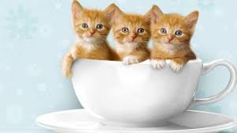

Hallo Temen-temen

Aku adalah kucing manis yang imut dan lucu. Biasanya orang-orang sering panggil aku ucing oyen. kalian pasti tahu kan, itu karena bulu aku berwarna orange. Umur aku baru 2 bulan loh. au suka sekali minum susu, biar aku cepet tumbuh besar.
SelengkapnyaKita adalah tiga saudara. Bulu ditubuh kita berwarna sama. Kita lucu kan temen-temen. Kalian tahu tidak aku yang mana, tebak yah temen-temen.
Kita adalah tiga saudara. Bulu ditubuh kita berwarna sama. Kita lucu kan temen-temen. Kalian tahu tidak aku yang mana, tebak yah temen-temen.
Kita adalah tiga saudara. Bulu ditubuh kita berwarna sama. Kita lucu kan temen-temen. Kalian tahu tidak aku yang mana, tebak yah temen-temen.